This dialog allows you to setup your Machine Tool Definition. Refer to each section below for more information. See also: Load From File, Machine Tool Setup
Manual Definition This option allows you to manually setup your Machine Tool Definition. Refer to each section below for more information. Load from File (See Load From File, Machine Tool Setup) This option allows you to select a machine tool from a library of machine tools. See Load From File, Machine Tool Setup for more information. 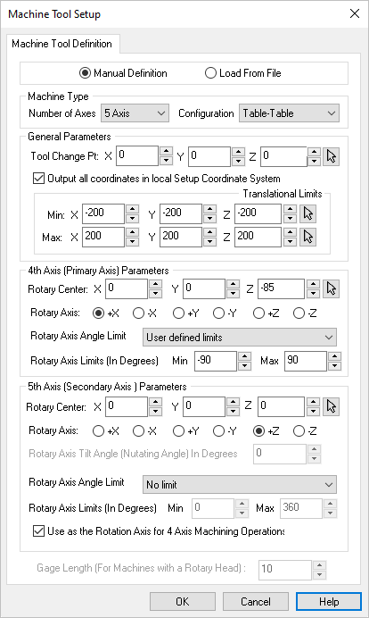 Dialog Box: Machine Tool Setup - Manual Definition |
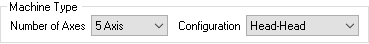 Number of Axis Specify the number of axis of the your Machine Tool. Select 3 Axis for both 2½ and 3 Axis machining methods. General information: •Select 3 Axis for both 2½ and 3 Axis machining methods. •Selecting 4 Axis or 5 Axis will the Configuration parameter listed below. Configuration Select the configuration of your machine. For 4 Axis, select either Table or Head. For 5 Axis, select either Head-Head, Table-Head or Head-Head (i.e., Trunnion Style) configuration. |
For all Machine Types, the following General Parameters are available. 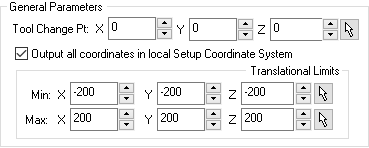 Tool Change Point Specify the X Axis coordinate location of a Tool Change Point or use the Pick button to select a point from your 3D model. This coordinate location will be output prior to every tool change. Note: Tool change variables may need to configured in your selected Post Processor. Output all coordinates in local Setup Coordinate System Check this box to output the G code's tool motion coordinates in the local setup Machine Coordinate System (MCS). If left unchecked all coordinates will be output in the World Coordinate System (WCS). Note: Rapid motions in all indexed operations are converted to federate motions when the setup is not aligned with the machine Z. This is done only when a head configuration is defined and the option Output all coordinates in local Setup Coordinate System is NOT checked. Translational Limits This will be the Minimum X direction Translation Limit allowed by your machine tool. Note: These parameters are not applied and are reserved for future use. |
For the 4 Axis Machine Type the following additional Parameters are available.
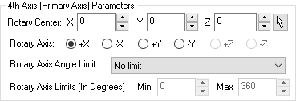 For 4 Axis Setups 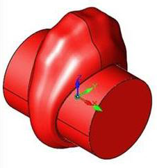 Rotary Center Your Machine Type is set to 4 Axis. Specify the X Axis coordinate location of the Rotary Center point of the Primary Axis of your Machine Tool. Rotary Axis When Number of Axis is set to 4 Axis: When Number of Axis is set to 5 Axis: Rotary Axis Angle Limit Select from this list of Rotary Axis Angle Limits depending on your machine tool. Select User Defined Limits to activate the Min and Max input fields to enter your machine tool's limits (in degrees). Rotary Axis Limits (In Degrees) You have chosen User Defined Limits for the Angle Limits of the 4th axis of your Machine Tool. Enter here the Minimum Angle Limit in degrees. |
For the 5 Axis Machine Type the following additional Parameters are available. 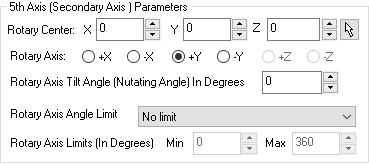 Recommendations:
Rotary Center Specify the location of the Rotary Center point or select the Pick icon to select a point from the graphics screen. The part geometry must pass through the rotary center. The rotary center is indicated with a Red arrow when this dialog is displayed and machine type is set to 5 Axis. Rotary Axis Select the axis that will define the Rotary Axis. For a Head-Head and Table-Head machining configurations, the Secondary Axis rotates about X or Y axis. Select this depending on your machine tool. For Table-Table configurations, the secondary axis could be set to X,Y or Z depending on your machine tool. Rotary Axis Tilt Angle (Nutating Angle) In Degrees The Rotary Axis Tilt Angle is used for 5 Axis machines with a Nutating Head. The schematic of a Nutating Head is shown below. Here the C Axis (Red) is the Primary Rotation and the Nutating Axis (Green) is the Secondary Rotation. 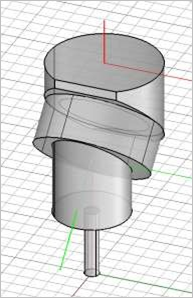 Nutating Head Rotary Axis Angle Limit Select from the list of 5th Rotary Axis Angle Limits depending on your machine tool. Select User Defined Limits to activate the Min and Max input fields to enter your machine tool's limits (in degrees). Rotary Axis Limits (In Degrees) You have chosen User Defined Limits for the Angle Limits of the 5th axis of your Machine Tool. Enter here the Minimum Angle Limit in degrees. Use as the Rotation Axis for 4 Axis Machining Operations With the Machine Type set to 5 Axis, you can check this box to set the 5th Axis (Secondary Axis) to be the 4th rotary axis. This allows you to use the 5 Axis operations (except for 5 Axis Drive Curve) in 4 Axis mode. Check this box and then select 4 Axis from the Cut Parameters tab of the 5 Axis operation. Gage Length For 5 axis toolpath computation, this value specifies the distance from the pivot point to the spindle face. When set to a non-zero value, the system automatically adds the tool length to this value to compute the Gage Length. 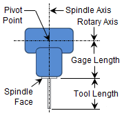 Gage Length Use as the Rotation Axis for 4 Axis Machining Operations With the Machine Type set to 5 Axis, you can check this box to set the 5th Axis (Secondary Axis) to be the 4th rotary axis. This allows you to use the 5 Axis operations (except for 5 Axis Drive Curve) in 4 Axis mode. Check this box and then select 4 Axis from the Cut Parameters tab of the 5 Axis operation. |
This parameter is used for 5 axis toolpath computation. The value that needs to be specified in the machine setup dialog for Gage Length is the distance from the pivot point to the spindle face. When this is set to a non-zero value, the system automatically adds the tool length specified under the tool definition dialog to this value to compute the Gage Length. 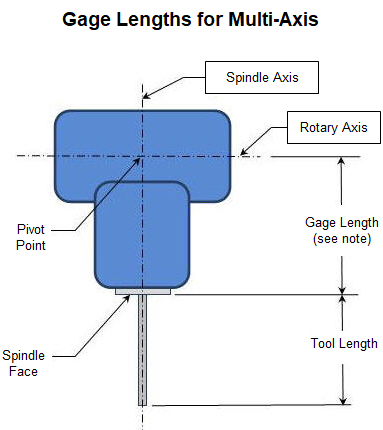 5th Axis - Gage Length (for Machines with a Rotary Head) |
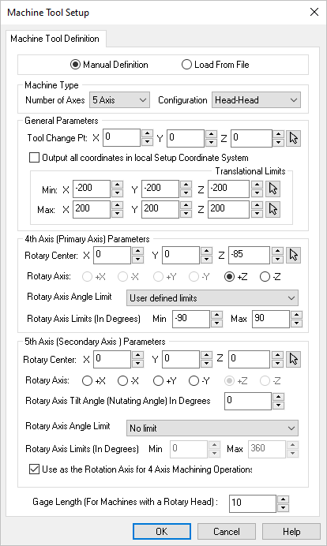 5 Axis Machine Setup for a Head – Head configuration
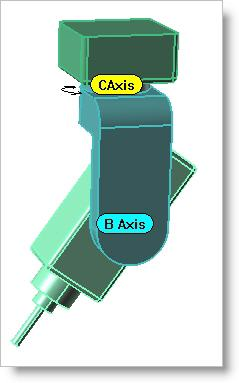 5 Axis Machine Setup for a Head – Head configuration |